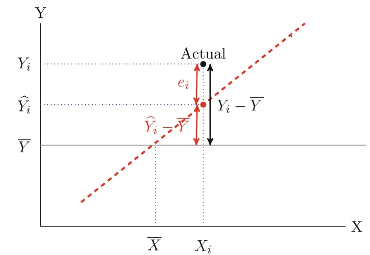
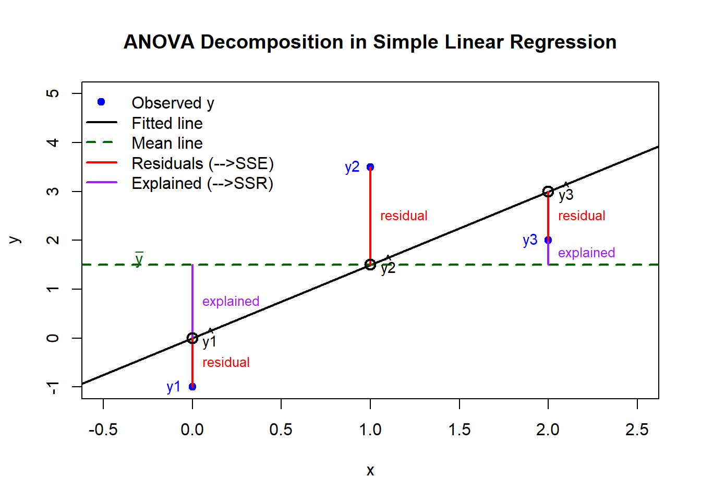
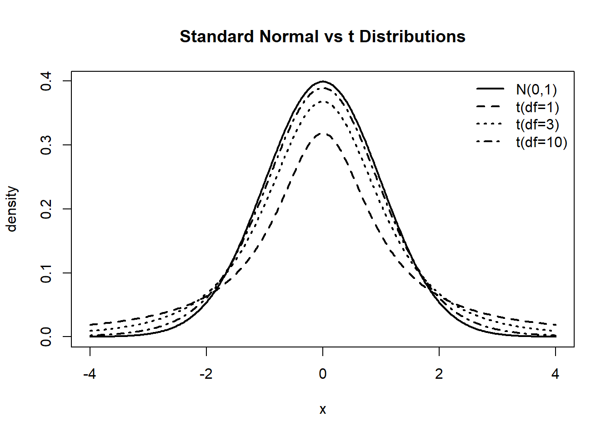
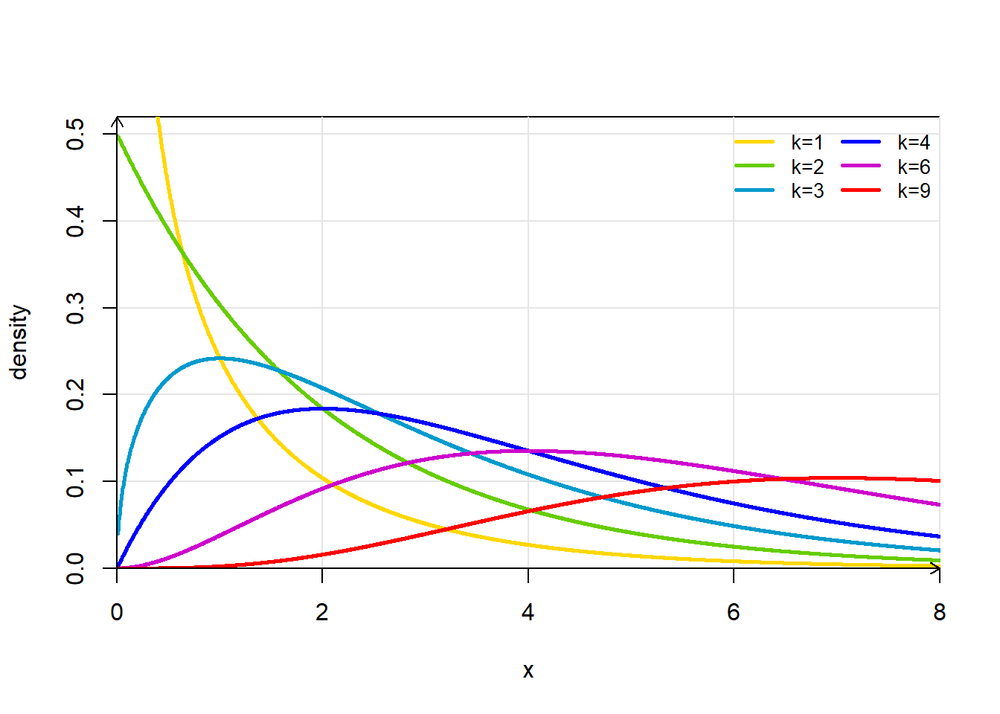
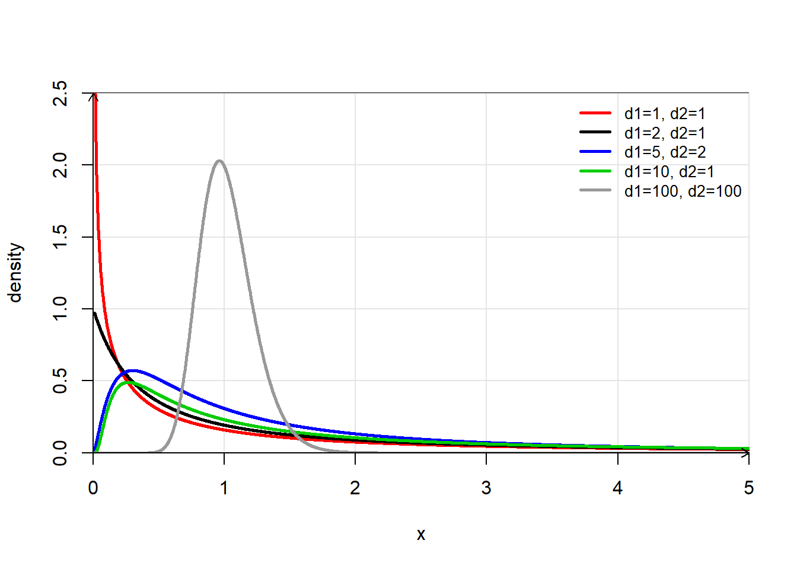
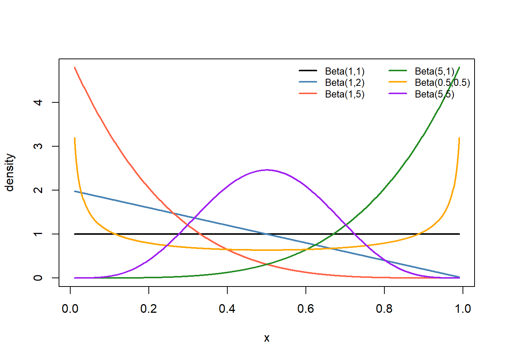

Lec 04: ANOVA and Diagnostics In Simple Linear Regression
1 Intro
1.1 Review: Lecture 01-03
Lecture 01: LSE: \[\{\hat\beta_0, \hat\beta_1\} = \arg\min_{\beta_0, \beta_1} \sum_{i=1}^n (y_i -\beta_0 - \beta_1 x_i)^2\]
The LSEs are \[\hat\beta_1 =\frac{\sum_{i=1}^n (x_i - \bar{x})y_i}{\sum_{i=1}^n (x_i - \bar{x})^2}=\sum_{i=1}^n\frac{(x_i - \bar{x})}{S_{XX}}y_i.\] \[\hat\beta_0 = \bar{y} - \hat\beta_1 \bar{x} = \sum_{i=1}^n \left(\frac{1}{n} - \frac{\bar{x}}{S_{XX}}(x_i - \bar{x})\right) y_i\]
Lecture 02: CI, and hypothesis testing related to \(\beta_1\).
Lecture 03: Estimation and prediction, .
This lecture (04): .
2 Sum of Squares
2.1 Sum of Squares Decomposition
Total Sum of Squares (SST): \[SST = \sum_{i=1}^n (y_i - \bar{y})^2\]
The total variation in the response variable.
Regression Sum of Squares (SSR): \[SSR = \sum_{i=1}^n (\hat{y}_i - \bar{y})^2\] The variation explained by the predictor (regression model).
Error Sum of Squares (SSE): \[SSE = \sum_{i=1}^n (y_i - \hat{y}_i)^2\] The variation not explained by the model (regression).
2.2 Sums of Squares
2.3 Decomposition of the Total Sum of Squares
It can be shown that: \[SST = SSR + SSE\]
Proof: \[\begin{align*} SST &= \sum_{i=1}^n (y_i - \bar{y})^2 \\ &= \sum_{i=1}^n \big[(y_i - \hat{y}_i) + (\hat{y}_i - \bar{y})\big]^2 \\ &= \sum_{i=1}^n (y_i - \hat{y}_i)^2 + \sum_{i=1}^n (\hat{y}_i - \bar{y})^2 + 2\sum_{i=1}^n (y_i - \hat{y}_i)(\hat{y}_i - \bar{y}) \\ &= SSE + SSR + 2\sum_{i=1}^n (y_i - \hat{y}_i)(\hat{y}_i - \bar{y}) \end{align*}\]
The last term is zero because
2.4
- Don’t remember the normal equations? Here is the derivation \[\begin{align*} \frac{\partial}{\partial \beta_0} \sum_{i=1}^n (y_i - \beta_0 - \beta_1 X_i)^2 &= -2 \sum_{i=1}^n (y_i - \beta_0 - \beta_1 X_i) = 0, \\ \frac{\partial}{\partial \beta_1} \sum_{i=1}^n (y_i - \beta_0 - \beta_1 X_i)^2 &= -2 \sum_{i=1}^n X_i (y_i - \beta_0 - \beta_1 X_i) = 0. \end{align*}\]
- The above two equations are called the normal equations. They can be rewritten as \[\sum_{i=1}^n e_i = 0 \quad\text{and}\quad \sum_{i=1}^n e_i X_i = 0.\]
2.5 Sum of Squares Decomposition: A Numerical Example

2.6 Sum of Squares Decomposition: A Numerical Example
\((x_1, y_1)=(0, -1); (x_2, y_2)= (1, 3.5); (x_3, y_3)=(2,2)\)
\(\hat\beta_0 =0, \hat\beta_1=1.5\)
$ {y} = = 1.5 $
\(\hat y_1 = \hat\beta_0 + \hat\beta_1 x_1 = 0 + 1.5*0 = 0\)
\(\hat y_2 = \hat\beta_0 + \hat\beta_1 x_2 = 0 + 1.5*1 = 1.5\)
\(\hat y_3 = \hat\beta_0 + \hat\beta_1 x_3 = 0 + 1.5*2 = 3\)
\(SST = \sum_{i=1}^3 (y_i - \bar{y})^2 = (-1-1.5)^2 + (3.5-1.5)^2 + (2-1.5)^2 = 10.5\)
\(SSR = \sum_{i=1}^3 (\hat{y}_i - \bar{y})^2= (0-1.5)^2 + (1.5-1.5)^2 + (3-1.5)^2= 4.5\)
\(SSE = \sum_{i=1}^3 (y_i - \hat{y}_i )^2 = (-1 -0)^2 + (3.5-1.5)^2 + (2-3)^2=6\)
2.7 Sum of Squares Decomposition: A Numerical Example
3 ANOVA Table
3.1 ANOVA Table for SLR
- An analysis of variance (ANOVA) table summarizes the results of the regression analysis. It typically has 5 or 6 columns.
- Source of variation (Regression, Error, Total)
- Degrees of freedom (DF)
- Sum of squares (SS)
- Mean square (MS = SS/DF)
- F-statistic (for testing \(H_0: \beta_1 = 0\) vs. \(H_a: \beta_1 \neq 0\))
- p-value (optional)
3.2 ANOVA Table for SLR
\[\begin{array}{|l|c|c|c|c|} \hline \textbf{Source} & \textbf{DF} & \textbf{SS} & \textbf{MS} & \textbf{F} \\ \hline Regression & 1 & SSR & MSR = SSR/1 & F = MSR/MSE \\ Error & n-2 & SSE & MSE = SSE/(n-2) & \\ Total & n-1 & SST & & \\ \hline \end{array}\]DF: degrees of freedom
SS: sum of squares
MS: mean square (SS divided by corresponding DF)
F: F-statistic for testing \(H_0: \beta_1 = 0\) vs. \(H_a: \beta_1 \neq 0\)
Under \(H_0\), \(F \sim F_{1, n-2}\).
\(R^2\) can be computed from the table. (how?)
3.3 E[SSR]
- We will rewrite SSR in terms of \(\hat\beta_1\):
\[\begin{align*} SSR &= \sum_{i=1}^n (\hat{y}_i - \bar{y})^2 \\ &= \sum_{i=1}^n (\hat\beta_0 + \hat\beta_1 X_i - \bar{y})^2 \\ &= \sum_{i=1}^n (\hat\beta_1 (X_i - \bar{X}))^2 \quad\text{(since $\hat\beta_0 = \bar{y} - \hat\beta_1 \bar{X}$)}\\ &= \hat\beta_1^2 \sum_{i=1}^n (X_i - \bar{X})^2 = \hat\beta_1^2 S_{XX}. \end{align*}\] - Therefore, \[E[SSR]=E[\hat\beta_1^2]S_{XX}.\]
3.4 E[MSR]
- We find that \(SSR=\hat\beta_1^2 S_{XX}\). But \(\hat\beta_1 \sim N(\beta_1, \sigma^2/S_{XX})\). Note that \(Var(\hat\beta_1) = E(\hat\beta_1^2) - E^2[\hat\beta_1]\). Therefore, \[\begin{align*} E[SSR] &= E[\hat\beta_1^2 S_{XX}] \\ &= S_{XX} E[\hat\beta_1^2] \\ &= S_{XX} \left( \text{Var}(\hat\beta_1) + (E[\hat\beta_1])^2 \right) \\ &= S_{XX} \left( \frac{\sigma^2}{S_{XX}} + \beta_1^2 \right) \\ &= \sigma^2 + \beta_1^2 S_{XX}. \end{align*}\]
Note that \(MSR = SSR/1 = \hat\beta_1^2 S_{XX},\) and \(E[MSR] = E[SSR/1] = \sigma^2 + \beta_1^2 S_{XX}\).
3.5 E[SSE]
\[\begin{align*} E[SSE] &= E\left[\sum_{i=1}^n (y_i - \hat{y}_i)^2\right] = E\left[\sum_{i=1}^n e_i^2\right] = E[e'e] \\ &= E[(Y - \hat{Y})'(Y - \hat{Y})] = E[Y'(I - H)'(I - H)Y] \\ &= E[Y'(I - H)Y] \quad\text{(since $I-H$ is symmetric and idempotent)} \\ &= E[\text{trace}((I - H)YY')] \quad\text{(since trace is invariant under cyclic permutations)} \\ &= \text{trace}((I - H)E[YY']) \\ &= \text{trace}((I - H)(Var(Y) + E[Y]E[Y]')) \\ &= \text{trace}((I - H)(\sigma^2 I + X\beta\beta'X')) \\ &= \sigma^2 \text{trace}(I - H) + \text{trace}((I - H)X\beta\beta'X') \\ &= \sigma^2 (n - 2) + 0 \quad\text{(since $(I-H)X = 0$)} \\ &= (n-2)\sigma^2. \end{align*}\]
3.6 E[MSE]
- Because \(MSE=SSE/(n-2)\), we have \[E(MSE) = \sigma^2.\]
- When \(\beta_1=0\), \(E(MSR) = E(MSE) = \sigma^2\).
- When \(\beta_1 \neq 0\), \(E(MSR) > E(MSE)\).
- This justifies the F-test for testing \(H_0: \beta_1 = 0\) vs. \(H_a: \beta_1 \neq 0\).
4 F Test
4.1 Construct F Test Statistics
- F-distributed statistics can be constructed as the ratio of two independent chi-square distributed statistics divided by their degrees of freedom. Let
- \(U \sim \chi^2_{d_1}\)
- \(V \sim \chi^2_{d_2}\)
- \(U\) and \(V\) are independent.
- Then \[F = \frac{U/d_1}{V/d_2} \sim F_{d_1, d_2}.\]
4.2 F-test in SLR
- In SLR, we can show that
- \(SSE/\sigma^2 \sim \chi^2_{n-2}\)
- \(SSR/\sigma^2 \overset{\textcolor{red}{when?}}\sim \chi^2_1\)
- \(SSR\) and \(SSE\) are independent.
- Therefore, \[F = \frac{MSR}{MSE} = \frac{SSR/1}{SSE/(n-2)} \overset{\textcolor{red}{when?}} \sim F_{1, n-2}.\]
4.3 F Test
- It turns out that
\[SSR/\sigma^2 \overset{\textcolor{red}{H_0: \beta_1=0}}\sim \chi^2_1\]
Also, we have shown that \[E[MSR] = \sigma^2 + \beta_1^2 S_{XX}, E[MSE]=\sigma^2\]
Both suggest that we should reject \(H_0: \beta_1 = 0\) when the ratio \(F = MSR/MSE\) is too large.
We reject \(H_0\) if \(F\) is too large: the rejection region is \(F > F_{\alpha, 1, n-2}\), where \(F_{\alpha, 1, n-2}\) is the \((1-\alpha)\) quantile of the \(F_{1, n-2}\) distribution.
The p-value is \(P(F_{1, n-2} \geq F_{\text{obs}})\), where \(F_{\text{obs}}\) is the observed value of the F-statistic.
4.4 Example
Summer temperature averages in Mount Airy, NC and Charleston, SC (1937-2021)

4.5 Example: ANOVA Table
4.6 F test and t-test
The F-statistic can be rewritten as \[F = \frac{MSR}{MSE} = \frac{\hat\beta_1^2 S_{XX}}{s^2} = \left( \frac{\hat\beta_1}{s/\sqrt{S_{XX}}} \right)^2 = t^2,\] where \(t = \hat\beta_1 / (s/\sqrt{S_{XX}})\) is the t-statistic for testing \(H_0: \beta_1 = 0\).
Thus, the F-test and the t-test for testing \(H_0: \beta_1 = 0\) are equivalent in SLR.
In fact, as \(F_{1,n-2}\) distribution is also equivalent to the distribution of the square of a random variable whose distribution is \(t_{n-2}\), the F test is equivalent to the two-sided t test.
4.7 Example
- Find the p-values based on t- and F-tests. What can you say about them?
Call:
lm(formula = Charl ~ MtAiry, data = mtair)
Residuals:
Min 1Q Median 3Q Max
-1.7502 -0.6291 -0.0123 0.5585 1.9484
Coefficients:
Estimate Std. Error t value Pr(>|t|)
(Intercept) 17.6208 2.8325 6.221 1.91e-08 ***
MtAiry 0.3921 0.1209 3.244 0.0017 **
---
Signif. codes: 0 '***' 0.001 '**' 0.01 '*' 0.05 '.' 0.1 ' ' 1
Residual standard error: 0.7581 on 83 degrees of freedom
Multiple R-squared: 0.1125, Adjusted R-squared: 0.1018
F-statistic: 10.52 on 1 and 83 DF, p-value: 0.0017015 F test to Compare Models
5.1 Compare Two Nested Models
- F tests can be used to compared nested models
- Here, nested models mean that one model (the reduced model) is a special case of the other model (the full model) with some parameters set to zero.
- For Simple Linear Regression (SLR), the two following models are nested:
- Reduced model: \(y_i = \beta_0 + \epsilon_i\), \(\rightarrow SSE_R\), note \(SSE_R=SST\).
- Full model: \(y_i = \beta_0 + \beta_1 x_{i}+ \epsilon_i\), \(\rightarrow SSE_F\), note \(SSE_F=SSE\).
- The reduced model is obtained from the full model by setting \(\beta_1 = 0\).
- The difference in SEE between the two models is due to the inclusion of the predictor variable \(x\) in the full model: \(SSE_R - SSE_F = SST - SSE = SSR\).
5.2 Compare Two Nested Models
- Let \(SSE_F\) and \(SSE_R\) be the SSE for the full and reduced models, respectively.
- Note that \(SSE_F \leq SSE_R\) because the full model has more parameters and thus fits the data at least as well as the reduced model.
- We can construct the following F-statistic to compare the two models: \[F = \frac{(SSE_R - SSE_F)/(df_R - df_F)}{SSE_F/df_F}\] where \(df_F=n-2\) and \(df_R=n-1\) are the degrees of freedom for the full and reduced models, respectively.
- Under \(H_0: \beta_1 = 0\), \(F \sim F_{df_F - df_R, df_F}\).
5.3 Example: Compare Two Nested Models
Code
Analysis of Variance Table
Model 1: Charl ~ 1
Model 2: Charl ~ MtAiry
Res.Df RSS Df Sum of Sq F Pr(>F)
1 84 53.752
2 83 47.705 1 6.047 10.521 0.001701 **
---
Signif. codes: 0 '***' 0.001 '**' 0.01 '*' 0.05 '.' 0.1 ' ' 16 F test and \(R^2\)
6.1 F test and \(R^2\)
- The coefficient of determination, \(R^2\), is defined as \[R^2 = \frac{SSR}{SST} = 1 - \frac{SSE}{SST}.\]
- \(R^2\) measures the proportion of the variance in the response variable that is explained by the predictor variable.
- \(R^2\) is always between 0 and 1. A value of 0 indicates that the model does not explain any of the variance in the response variable, while a value of 1 indicates that the model explains all of the variance.
6.2 F test and \(R^2\)
- The F-statistic can be rewritten in terms of \(R^2\) as follows: \[\begin{align*} F &= \frac{MSR}{MSE} = \frac{SSR/1}{SSE/(n-2)} \\ &= \frac{(R^2 \cdot SST)/1}{((1 - R^2) \cdot SST)/(n-2)} \\ &= \frac{R^2}{1 - R^2} \cdot (n - 2). \end{align*}\]
- Therefore, the F-test for testing \(H_0: \beta_1 = 0\) vs. \(H_a: \beta_1 \neq 0\) is equivalent to testing whether \(R^2\) is significantly greater than 0.
6.3 F test and \(R^2\)
The p-value for the F-test can be computed as \[\text{p-value} = P(F_{1, n-2} \geq F_{\text{obs}}) = P\left(F_{1, n-2} \geq \frac{R^2}{1 - R^2} \cdot (n - 2)\right).\]
Because of the relationship between and \(F\) and \(R^2\), under \(H_0: \beta_1 = 0\), we have \[\frac{R^2}{1 - R^2} \cdot (n - 2) \overset{H_0: \beta_1=0} \sim F_{1, n-2}.\]
Is there a name of the null distribution of \(R^2\)?
6.4 F test and \(R^2\)
Yes, its called the Beta distribution. Specifically, under \(H_0: \beta_1 = 0\), \[R^2 \overset{H_0: \beta_1=0}\sim \text{Beta}\left(\frac{1}{2}, \frac{n-2}{2}\right).\]
In fact, there is a connection between F and Beta distributions:
If \(F \sim F_{d_1, d_2}\), then \(\frac{d_1 F}{d_1 F + d_2} \sim \text{Beta}\left(\frac{d_1}{2}, \frac{d_2}{2}\right)\).
Conversely, if \(B \sim \text{Beta}\left(\frac{d_1}{2}, \frac{d_2}{2}\right)\), then \(\frac{d_2 B}{d_1 (1 - B)} \sim F_{d_1, d_2}\).
6.5 Correlation Coeficient
The correlation coefficient, \(r\), between the response variable \(y\) and the predictor variable \(x\) is defined as \[r = \frac{\sum_{i=1}^n (x_i - \bar{x})(y_i - \bar{y})}{\sqrt{\sum_{i=1}^n (x_i - \bar{x})^2 \sum_{i=1}^n (y_i - \bar{y})^2}}.\]
We have shown the relationship between \(\hat\beta_1\) and \(r\): \[\hat\beta_1 = r \frac{S_Y}{S_X},\] where \(S_Y\) and \(S_X\) are the sample standard deviations of \(y\) and \(x\), respectively.
It can be shown that: \[t = r \sqrt{\frac{n-2}{1-r^2}} \text{, which has been shown} \overset{H_0: \beta_1=0}\sim t_{n-2}.\]
7 Distributions
7.1 t vs N(0,1)
Code
xs <- seq(-4, 4, length.out = 400)
plot(xs, dnorm(xs), type = "l", lwd = 2, xlab = "x", ylab = "density",
main = "Standard Normal vs t Distributions")
lines(xs, dt(xs, df = 1), lwd = 2, lty = 2)
lines(xs, dt(xs, df = 3), lwd = 2, lty = 3)
lines(xs, dt(xs, df = 10), lwd = 2, lty = 4)
legend("topright",
legend = c("N(0,1)", "t(df=1)", "t(df=3)", "t(df=10)"),
lwd = 2, lty = c(1,2,3,4), bty = "n")
7.2 Chi-square
Code
# Chi-square PDFs in a Wikipedia-like style
ks <- c(1, 2, 3, 4, 6, 9)
cols <- c("gold", "chartreuse3", "deepskyblue3", "blue", "magenta3", "red")
x <- seq(0.01, 8, length.out = 2000)
# Precompute to set nice y limit
ymax <- max(sapply(ks, function(k) dchisq(x, df = k)))
ylim <- c(0, min(0.52, ymax))
# Empty plot
plot(x, dchisq(x, ks[1]), type = "n",
xlab = "x", ylab = "density",
xaxs = "i", yaxs = "i",
xlim = c(0, 8), ylim = ylim, main = "")
# Light grid
abline(h = pretty(ylim), v = pretty(c(0,8)), col = "grey90", lwd = 1)
# Draw density curves
for (i in seq_along(ks)) {
lines(x, dchisq(x, df = ks[i]), col = cols[i], lwd = 2.5)
}
# Axes arrows (optional, for the Wikipedia vibe)
arrows(0, 0, 8, 0, length = 0.08, xpd = TRUE, lwd = 1.2) # x-axis arrow
arrows(0, 0, 0, 0.52, length = 0.08, xpd = TRUE, lwd = 1.2) # y-axis arrow
# Compact, multi-column legend
legend("topright",
legend = paste0("k=", ks),
col = cols, lwd = 2.5, bty = "n", cex = 0.85, ncol = 2)
7.3 F distribution
Code
# F distribution PDFs in a Wikipedia-like style
pairs <- list(
"d1=1, d2=1" = c(1, 1), # red
"d1=2, d2=1" = c(2, 1), # black
"d1=5, d2=2" = c(5, 2), # blue
"d1=10, d2=1" = c(10, 1), # green
"d1=100, d2=100" = c(100, 100) # gray
)
cols <- c("red", "black", "blue", "green3", "grey60")
x <- seq(0.01, 5, length.out = 3000)
# Compute y-limit to include the tallest peak (around ~2.1 for 100,100 near x~1)
ylim <- c(0, 2.5)
# Empty plot
plot(x, df(x, 1, 1), type = "n",
xlab = "x", ylab = "density",
xaxs = "i", yaxs = "i",
xlim = c(0, 5), ylim = ylim, main = "")
# Light grid
abline(h = pretty(ylim), v = pretty(c(0,5)), col = "grey90", lwd = 1)
# Draw density curves
for (i in seq_along(pairs)) {
ab <- pairs[[i]]
lines(x, df(x, df1 = ab[1], df2 = ab[2]),
col = cols[i], lwd = 2.5)
}
# Axes arrows (optional, for the Wikipedia vibe)
arrows(0, 0, 5, 0, length = 0.08, xpd = TRUE, lwd = 1.2) # x-axis arrow
arrows(0, 0, 0, max(ylim), length = 0.08, xpd = TRUE, lwd = 1.2) # y-axis arrow
# Compact legend
legend("topright",
legend = names(pairs),
col = cols, lwd = 2.5, bty = "n", cex = 0.85, ncol = 1)
7.4 Beta Distribution
Code
# Beta distribution shapes (no title)
xs <- seq(0.01, 0.99, length.out = 1000)
# Parameter list: (alpha, beta)
betas <- list(
"Beta(1,1)" = c(1, 1),
"Beta(1,2)" = c(1, 2),
"Beta(1,5)" = c(1, 5),
"Beta(5,1)" = c(5, 1),
"Beta(0.5,0.5)" = c(0.5, 0.5),
"Beta(5,5)" = c(5, 5)
)
cols <- c("black", "steelblue", "tomato", "forestgreen", "orange", "purple")
# Compute ymax to set a good y-axis limit
ymax <- 0
for (ab in betas) {
ytmp <- dbeta(xs, ab[1], ab[2])
ymax <- max(ymax, ytmp, na.rm = TRUE)
}
plot(xs, 0*xs, type = "n",
xlab = "x", ylab = "density",
ylim = c(0, ymax), main = "")
i <- 1
for (nm in names(betas)) {
ab <- betas[[nm]]
lines(xs, dbeta(xs, ab[1], ab[2]), lwd = 2, col = cols[i])
i <- i + 1
}
legend("topright",
legend = names(betas),
col = cols, lwd = 2, bty = "n",
cex = 0.8, # smaller text
pt.cex = 0.8,
ncol = 2) # two columns to save space